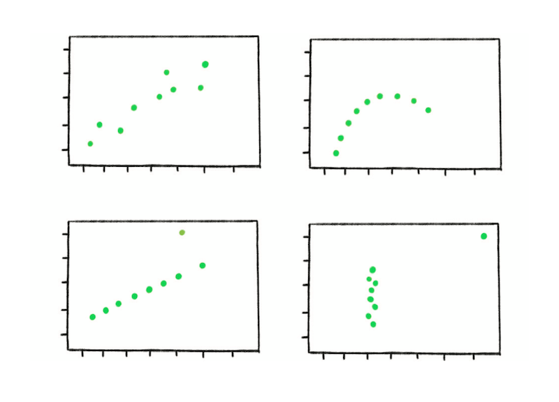
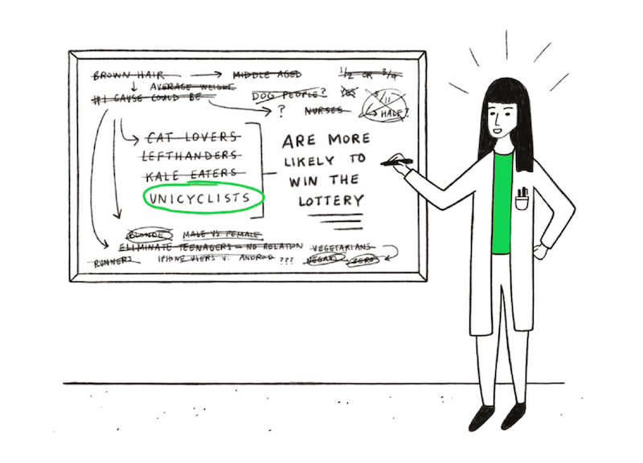
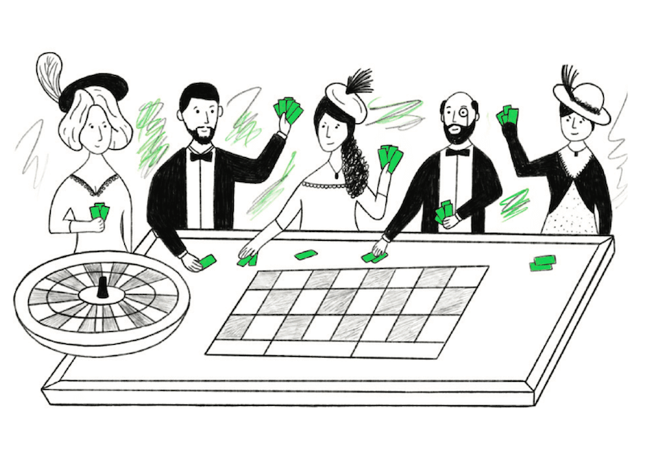
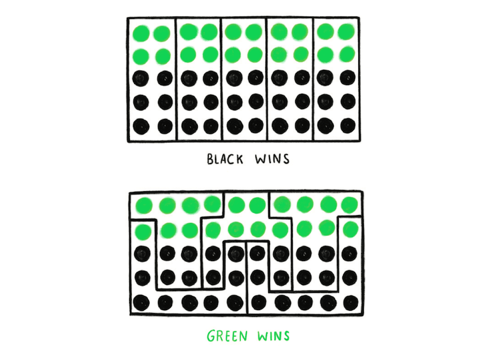
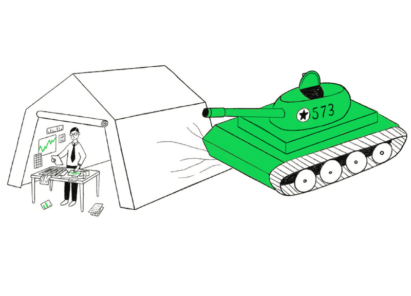
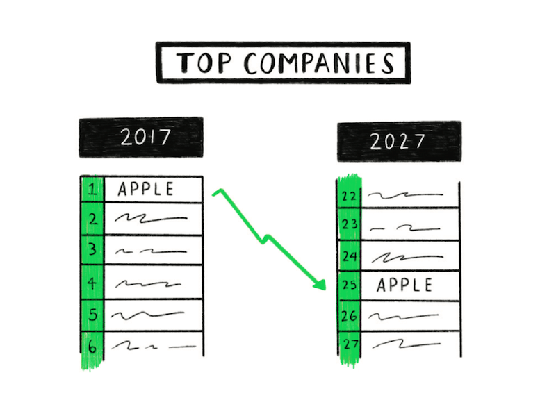

Appendix
Appendix A: Glossary & Non-Inclusive Terms to Avoid
Glossary
Below are a set of key terms and definitions provided by the Water Board Racial Equity Team in the development of the Racial Equity Resolution and Racial Equity Action Plan and are those that we adhere to in this Handbook. (citations can be found here).
For a more comprehensive list of equity-related terms, see the Racial Equity Tools Glossary. A more extensive list of data terms and definitions can also be found in the College of Water Informatics Data Glossary.
Disadvantaged Community (DAC) is defined by the California Water Code as a community in which the median household income (MHI) is less than 80 percent of the statewide annual MHI (CA Water Code Section 13149.2 and 79505.5(a)). At the time this document was developed, the statewide annual MHI from the U.S. Census Bureau from 2017-2021 was $84,097 (U.S. Census Bureau QuickFacts: California). Based on this data, a community with a household income of less than $67,278 qualifies as a DAC based on the Water Code definition.
Equality describes circumstances in which each individual or group is given the same or equal treatment, including the same resources, opportunities, and support. However, because different individuals or groups have different histories, needs, and circumstances, they do not have equal positions in society or starting points. Providing the same resources, support, or treatment does not guarantee that everyone will have fair or equal outcomes.
Ethnicity is a term used to describe subgroups of a population that share characteristics such as language, values, behavioral patterns, history, and ancestral geographical base. Social scientists often use the terms ethnicity and ethnic group to avoid the perception of biological significance associated with race.
Intersectionality is a term used to describe the complex, cumulative way in which the effects of multiple forms of discrimination (such as racism, sexism, and classism) combine, overlap and intersect especially in the experiences of marginalized individuals or groups.
Institutional racism describes the ways in which policies and practices perpetuated by institutions, including governments and private groups, produce different outcomes for different racial groups in a manner that benefits the dominant group. In the United States, institutional racism includes policies that may not mention race but still tends to result in benefiting white people over people of color.
Race is a social construct used to categorize humans into groups based on combinations of shared physical traits such as skin color, hair texture, nose shape, eye shape, or head shape. Although most scientists agree that such groupings lack biological meaning, racial groups continue to have a strong influence over contemporary social relations. Historically in the United States, race has frequently been used to concentrate power with white people and legitimize dominance over non-white people.
Racial equity means Race can no longer be used to predict life outcomes and outcomes for all groups are improved. For example, when we hold income constant, there are still large inequities based on race across multiple indicators for success, including the environment, education, jobs, incarceration, health and housing.
Racism is any prejudice against someone because of their race when systems of power reinforce those views.
Structural racism is the normalization and legitimization of an array of historical, cultural, institutional, and interpersonal dynamics that routinely advantage whites while producing cumulative and chronic adverse outcomes for people of color. Structural racism encompasses the entire system of white domination, diffused, and infused in all aspects of society, including its history, culture, politics, economics, and whole social fabric. Structural racism is more difficult to locate in a particular institution because it involves the reinforcing effects of multiple institutions and cultural norms, past and present, continually reproducing old and producing new forms of racism. Structural racism is the most profound and pervasive form of racism; all other forms of racism emerge from structural racism.
Systemic racism can be said to encompass both institutional and structural racism. Glenn Harris, president of Race Forward, defines systemic racism as “the complex interaction of culture, policy and institutions that holds in place the outcomes we see in our lives.” The legacy of systemic racism can be seen in a variety of outcomes affecting people of color, such as housing insecurity, a ten-fold wealth gap between white and Black or Latinx households, a dramatic over-representation of people of color in prison, and disparities in education, health, and exposure to environmental pollution.
Non-Inclusive Terms to Avoid
Below are a set of common terms that are non-inclusive particularly to Black and Indigenous People and are commonly used in the workplace that have the potential to exclude and alienate people. This is not an exhaustive list but we recommend that research be conducted to review non-inclusive terms that may be used and have a history prior to engaging with communities.
Blacklist - Blacklist typically refers to the ostracizing of a person, group, or organization that prevents them from participating in specific activities or spaces. This issue with the word blacklist is the association of the color with negative, evil, or wrong, and the racist undertones associated with it, and can be harmful.
- Alternatives: blocked, closed off, inaccessible, blocked list, banned, or closed list
Brown Bag - The term “brown bag” has a historical connotation with creating an exclusive gathering that required attendees to have a lighter skin tone than a brown paper bag to participate and gain access.
- Alternatives: lunch in, lunch and learn, presentation, seminar
Chief - this term is used throughout the Water Boards to indicate positions and job titles. This term is appropriated from the Indigenous Peoples of North America and should be avoided wherever possible.
- Alternatives: manager, lead, head
Grandfathered in - The American South created absurd voting requirements that targeted Black people and made it almost impossible to vote. The name for these requirements is the “Grandfather Clause.” They wrote the Amendment in a way to imply the practice was not discriminatory. They created stringent new voter requirements such as literacy tests. These requirements did not apply to people who had voted before 1867. Slaves did not know they were free until June 19, 1865. However, slavery was abolished on January 1, 1863, making it nearly impossible for a person formally kept in captivity to be legally allowed to vote.
- Alternatives: legacied, exempted, preapproved
Master ____ - using the term “master” to describe something that is the main or centralized source of information is inappropriate due to the connotations associated with slavery.
- Alternatives: primary, main
Pow wow - Social gatherings for ceremonial and celebratory purposes conducted under strict protocols. Avoid using the phrase to refer to a quick business meeting or informal social gathering as this is a form of cultural appropriation.
- Alternatives: meeting, gathering, or huddle
Spirit Animal - These are spiritual guides that take the form of animals often viewed as sacred in tribal cultures. Non-native people appropriate the term to relate themselves to an animal, inanimate object, or person and draw parallels between the person and object’s characteristics. For example, saying that a sloth is your spirit animal because you are slow, lazy, and/or sleepy.
- Alternatives: patronus, kindred spirit, reason for living, muse, guide, or familiar.
Stakeholder - The issue with the word stakeholder is that in a colonial context, a stakeholder was the person who drove a stake into the land to demarcate the land s/he was occupying/stealing from Indigenous territories. Continued use of the term can be construed as disrespectful of Indigenous people as well as perpetuating colonization and re-traumatization.
- Alternatives: interested parties, partners, collaborators
Totem Pole - Pieces of wood carved with a person’s totems. It is a tradition particular to Native and Indigenous people on the Northwest Coast. They tend to convey a family or tribe’s history. Avoid using phrases like “low on the totem pole” or “climbing the totem pole” as these are forms of cultural appropriation. These phrases are also inaccurate because in some First Nation communities being lower on the totem pole is a higher honor.
- Alternatives: climbing the corporate ladder, the lowest rung on the latter, least significant, or promotion.
White Paper - while this term is widely used to describe an authoritative document, the term has historical implications that evoke negative associations especially with Tribes.
- Alternatives: Issue paper, briefing document, prospectus
Appendix B: Beware of Common Types of Survey Bias
The bulk of content in this appendix has been informed by: A Catalog of Biases in Questionnaires.
Biases Associated with Question Design
While the specific sources below vary, they can generally be caused by one or more of the following issues: problematic wording, data for the intended purpose of the question is missing or inadequate, the scale included the question is faulty, questions that are leading, intrusive, or inconsistent.
| Bias Source | Description | Tips to Minimize Bias |
| Abrupt question | The question is too short and can come off as jarring to the respondent. | Add a transition or introduction to the beginning of the question. |
| Ambiguous question | The question leads respondents to understand the question differently than was intended and, therefore, to answer a different question than was intended | Have a trusted partner, but one who had not participated in survey development, review and provide feedback on questions. |
| Complex question | The question is usually long, vague, too formal, or overly complex. | Keep questions short and to the point. |
| Data degradation | The question is phrased in a way that encourages respondents to provide less accurate information, which cannot be recovered or made more accurate after the survey is complete. Note that sometimes it is more beneficial to collect generalized information so that you can prevent the unnecessary collection of Personal Identifiable Information (PII). |
Phrase questions in a manner that collects the most accurate information (ideally in the form of continuous data) Example: What age category do you belong to? ➔ What is your age? OR What year were you born? |
| Double-barreled question | The question is made up of two or more questions, and therefore make it difficult for the respondent to know which part of the question to answer and for the investigator to know which part of the question the respondent actually answered. | Separate questions so that each question is only asking for one thing. |
Forced choice (aka insufficient category) |
The question provides too few categories that results in the respondents being forced to choose an imprecise option. | Add one or more of the below category options to your question:
|
| Hypothetical question | The question asks the respondent about their beliefs (hypothetical), which can yield more generalized results than are helpful. | Keep questions specific to the respondent’s behaviors. Example: Do you think…? ➔ Have you ever…? |
| Incomplete interval | The question does not include all possible intervals so respondents cannot select a category that most accurately reflects their experience. | Add more intervals, or broaden interval categories, when appropriate. Example - insufficient intervals
Example - sufficient intervals
|
| Insensitive scales | The question does not contain a range or scale that would result in sufficient discriminating power to differentiate the respondents because of the limited categories. | Use a scale has five or more categories. Example: On a scale of 1-3…? ➔ On a scale of 1-5… OR On a scale of 1-10…? |
| Intrusive question | The question is requesting sensitive information (e.g. PII, income, identity, culture, etc.) too abruptly or directly and can feel intrusive to the respondent. This can result in the respondent electively suppressing information, providing inaccurate information and can influence how the respondent answers subsequent questions. |
Confirm the information you are asking for is truly essential to your project. If it is, frame the question in a way that respects the sensitivity of the information you are requesting. Try adding a transition into the question that provides context and explains why the information is needed. |
| Leading question | The question is worded in a way that subtly guides respondents toward a certain answer. | Use wording that is generalized and unbiased towards the respective answer choices. Example: Don’t you agree that…? ➔ Do you agree or disagree that…? OR What are your thoughts about…? |
| Overlapping interval | The question contains intervals that overlap, which can result in respondent confusion related to which interval should be selected | Use intervals that do not overlap Example - Overlapping intervals
Example - sufficient intervals
|
| Scale format | An even or an odd number of categories in the scale for the respondents to choose from may produce different results. Questions with an odd number of categories in the scale can result in neutral answers, whereas those with even categories forces respondents to pick a side on the scale. |
There is no consensus on which approach is better overall (i.e. even vs. odd). What’s important is that you select the scale that is most appropriate for the question and data you need. |
| Technical jargon | The question includes technical terms that are specific to a profession that may not be understood by those outside of that field. | Replace jargon with more plain, accessible, and inclusive language. |
| Time period | The question does not identify a common time period for the respondents’ experience. | Include a specific time period in the question. Example: In the last 12 months…? ➔ Between Jan 1 to Dec 31 of last year…? |
| Uncommon word | The question uses uncommon or difficult words. | Replace uncommon words with those that are more commonly used by your survey audience. |
| Vague wording | The question includes words that are undefined or may have multiple definitions. | Replace vague words with those that are more precise. Examples:
|
| Word choice | The question may use words or phrases that pull focus or frame aspects of the question in a way that increases the likelihood of respondents choosing an answer that does not accurately reflect their intended choice. | Use consistent question structure and terminology. Example - poor word choice: Which operation would you prefer?
Patients scheduled for surgery may choose the second option when they see or hear the words “90%” and “survive,” but in fact a 90% survival rate (or 10% mortality) is worse than a 5% mortality Example - improved word choice: Which operation would you prefer?
|
Biases Associated with Survey Design
While the specific sources below vary, they can generally be caused by one or more of the following issues: inconsistencies with past surveys which makes it difficult to compare responses over time, problematic formatting or design that can cause confusion or fatigue among respondents and result in inaccurate answers.
| Bias Source | Description | Tips to Minimize Bias |
|---|---|---|
| Horizontal formatting | For questions associated with multiple choice responses, displaying multiple choices horizontally can cause confusion. This is especially important for surveys completed on paper. |
List multiple choices vertically. Example - horizontal formatting Excellent … [ ] Good … [ ] Fair … [ ] Poor … [ ] Example - vertical formatting Excellent …….. [ ] |
| Inconsistency among surveys | Components of a survey are changed over time and over the course of multiple offerings of the survey. When components of a survey change, it can influence how people respond and the results of the different surveys may not be comparable. Survey components include:
|
If there is interest in comparing responses to surveys that have been administered at multiple points in time, keep the sections of the survey that you want to compare identical. If there are instances where new questions arise and are essential to include in future surveys, add the new questions to the end of the existing survey so the respondent’s experience for the initial questions are as comparable as possible. If new questions are added - be sure the survey length does not exceed the times recommended in the “response fatigue” row below. |
Juxtaposed scale (aka Likert scale) |
This is often referred to as a Likert Scale question, which displays a list of single-answer questions and a rating scale for the answers, so a respondent can select a value from the scale to answer each question. Likert Scale questions tend to ask about:
|
The advantage of using Juxtaposed (aka Likert) scale formatting is that it can force respondents to think about and compare their responses for each item because they are side by side. However, this format has been shown to cause confusion among respondents who are less educated. If you suspect that may apply to your intended survey audience, you may prefer to separate the questions so respondents only review and answer one question at a time. |
No-saying/ yes-saying (aka nay-saying / yea-saying) |
For groups of questions that only include statements associated with yes/no response options, respondents tend to answer yes to all questions or no to all questions. | Use both positive and negative statements about the same issue sprinkled through the group of questions to break up the pattern and encourage respondents to consider one question at a time, rather than to group them together. |
| Non-response | Even with adequate sample representation (see below), individuals are choosing not to respond to your survey. | Consider when and how you are reaching out to your audience. Maybe changing the timing or method through which you are offering the survey will improve the response rate. Consider reducing the length of time it take to complete the survey. Remember that the average attention span for adults in the U.S. is approximately 8 seconds - taking even a five minute survey may feel like too much for your audience. Consider offering incentives for completing the survey. |
| Open-ended questions | Open-ended questions allow respondents to provide short or long text responses to a question. There is no way to standardize the quality and vocabulary used in the responses which can make analysis more challenging. Moreover, respondents are less likely to take time to answer the questions fully. |
Only use open-ended questions when necessary. Open-ended questions are more appropriate than close-ended questions, particularly in surveys of knowledge and attitudes, and can yield a wealth of information. If you decide to use an open-ended question, be sure to decide on how you will analyze the responses using appropriate qualitative methods. |
Sample representation (aka sampling bias, selection bias) |
The sample of individuals selected to complete the survey is not representative of the population, which can lead to inaccurate results and conclusions. | Ensure you are delivering the survey randomly to the audience(s) that represent the population, and that you have enough responses to be representative of the population. Consider the best way(s) to reach your target audience - and use methods that would be the most effective for and accessible to them. Consider extending the deadline to complete the survey and sending reminders to those who have not yet responded. |
| Skipping questions | Questions that instruct respondents to skip to another question based on their response can lead to the loss of important information. | Be sure questions that will be skipped cannot be applied to different respondents based on their first response. Work with partners to test the survey before it is administered to work out any such issues. Example of a skipped question: (1) Are you self-employed?
In this case, individuals who are not self-employed would not be able to complete questions 2 - 7. If the information requested in one or more of those skipped questions is pertinent to all respondents, try re-ordering or grouping questions so respondents are able to provide all essential information regardless of their choices. |
| Response choice alignment | If interviewers are completing the survey for the respondents (e.g., during in-person or telephone interviews): placing the check-box to the left of (before) the possible options can result in errors. If respondents are completing the survey themselves (e.g., mailed, online surveys): placing the check-box to the right of (after) the possible options can make it more difficult for respondents to complete the survey. |
Select the response choice alignment according to how you will be delivering the survey to reduce confusion and errors. If interviewers are completing the survey for the respondents, use a right-aligned format: Excellent …….. [ ] If respondents are completing the survey themselves, use a left-aligned format: [ ] excellent [ ] good [ ] fair [ ] poor |
| Response fatigue | The survey is too long, which induces fatigue among respondents and can result in rushed, uniform and/or inaccurate answers. For example, towards the end of a lengthy survey, respondents tend to say all yes or all no or refuse to answer all remaining questions. |
Review the original purpose of your project and survey and only include essential questions. The length of time to complete surveys should not exceed the following times:
|
Biases Associated with Survey Implementation
While the specific sources below vary, they can generally be caused by one or more of the following issues: the interviewer is not objective, respondent’s conscious or subconscious reactions, learning, inaccurate recall, or perception of questions based on their lived experiences and culture.
| Bias Source | Description | Tips to Minimize Bias |
|---|---|---|
|
(aka yes bias, friendliness bias, confirmation bias) |
Respondents tend to agree with survey questions, regardless of their actual beliefs, to avoid being disagreeable in the eyes of the interviewer or to expedite completing the survey. | Reframe questions so they use more neutral language and avoid asking for agreement on a topic. Avoid close-ended questions that do not leave room for nuance; allow for multiple choice and scale questions and provide space for additional open-ended responses. Train interviewers to deliver surveys consistently and objectively - so respondents don’t feel pressured to agree with the interviewer. Enable respondents to complete the survey anonymously and without an interviewer present. |
| Cultural differences | The culture and lived experiences of the respondents can affect their perception of questions and therefore their answers. | Have a trusted partner, but one who had not participated in survey development, review and provide feedback on questions. |
End aversion (aka central tendency) |
Respondents usually avoid ends of scales in their answers and tend to provide responses that are somewhere closer to the middle of the response options. Example: Respondents are more likely to check “Agree” or “Disagree” than “Strongly agree” or “Strongly disagree” |
None - but be aware of this potential bias as you analyze your results. |
| Extreme response bias | Respondents tend to submit responses that are at the ends of scales and provide responses that are at the extremes of the possible response options. Example: Respondents are less likely to check “Agree” or “Disagree” than “Strongly agree” or “Strongly disagree” |
None - but be aware of this potential bias as you analyze your results. |
Faking bad (aka hello-goodbye effect) |
Respondents try to appear worse off than they actually are to qualify for support or resources that could be granted in according to their responses. | If receipt of resources is tied to how people complete the survey, consider when and how to communicate how respondent data will be used to make such decisions. |
Faking good (aka social desirability, conformity bias, obsequiousness) |
Respondents may alter their responses in the direction they perceive to be desired by the investigator or society at large. Socially undesirable answers tend to be under-reported. | Use wording that is generalized and neutral. Ask questions that might be associated with individual or social desirability toward the end of the questionnaire so that they will not affect other questions. Let respondents complete the survey anonymously. Make questions about name or contact information optional. Instead of requiring in-person or telephone interviews, let respondents submit anonymous, mailed in surveys. When asking about socially undesirable behaviors, it is better to ask whether the person had ever engaged in the behavior in the past before asking about current practices, because past events are less threatening. |
| Hypothesis guessing | Respondents may systematically alter their responses when, during the process of answering the survey, they think they know the study hypothesis. | None - but be aware of this potential bias as you analyze your results. |
| Interviewer data gathering methods | The interviewer can pose questions, or gather data in a way that is informed and led by their own biases, information they think they know about the respondent, etc. This can result in errors that impact survey results. | Train interviewers to deliver surveys consistently and objectively. |
| Nonblinding | When an interviewer is not blind to the study hypotheses, they may consciously gather selective data | Train interviewers to deliver surveys consistently and objectively and ensure those delivering the survey are blind to the study hypotheses. |
Positive satisfaction (aka positive skew) |
Respondents tend to give positive answers when answering questions on satisfaction. | None - but be aware of this potential bias as you analyze your results. |
| Primacy and recency | Research has indicated that in mailed surveys, respondents may tend to choose the first few response options on the list (primacy bias), though in telephone or personal interview surveys, they are more likely to respond in favor of the later categories (recency bias). | Reduce the number of categories presented to respondents and randomize the order of categories in the survey. Randomize the answer option order. |
Proxy respondent (aka surrogate data) |
Soliciting information from proxies (e.g., spouse, family members) may result in inaccurate information. | Keep questions related to the respondent’s experience. Do not ask someone to answer attitudinal, knowledge, or behavior questions for others. | |
| Recall / Telescope Bias | This type of bias is because of differences in accuracy or completeness of respondents recall prior to major events or experiences (general recall), and because respondents may recall an event or experience in the distant past as happening more recently (telescope). | None - but be aware of this potential bias as you analyze your results. |
| Respondent’s learning | Having thought about prior questions can affect the respondent’s answer to subsequent questions through the learning process as the questionnaire is completed. | Randomize the order of the questions for different respondents. |
| Unacceptability | Questions or measurements that can hurt, embarrass, invade privacy, or require excessive commitment may be systematically refused or evaded. | Whenever possible, do not ask such questions. If asking such a question is absolutely essential and unavoidable, do so with sensitivity and consider using incentives to increase participation rate. |
Appendix C: Common Data Fallacies
The bulk of content in this appendix has been informed by or pulled directly from: Geckoboard’s Data Fallacies.
| Data Fallacy | Description | Additional Equity Considerations |
|---|---|---|
Cherry Picking
|
Selecting results that fit your hypothesis or claim, and excluding those that don’t. | This doesn’t mean you should always keep all data you have access to (see Data Processing). It’s important to be aware of data or results you are excluding and to be honest and transparent about why you’re excluding it. |
Cobra Effect (aka Perverse Incentive)
|
Setting an incentive that accidentally produces the opposite result to the one intended. | This is all about unintended consequences of our decisions and actions. When you’re developing your project objectives, be sure to take the Planning step seriously and take the time needed to answer as many of the questions provided as possible. |
Danger of Summary Metrics  |
Only looking at summary metrics and missing big differences in the raw data. | Summary metrics or descriptive analytics can (and should!) be used to help us understand out data. However, it’s important to remember that they cannot tell us anything about why we’re seeing the results, patterns, or trends that are identified. Be sure to use summary metrics in concert with context and other analyses so you can see your data holistically. | | |
Data Dredging  |
Repeatedly testing new hypotheses against the same set of data, failing to acknowledge that most correlations will be the result of chance. | It can be exciting to uncover meaningful and logical correlations when conducting your analyses. Similar to cherry picking, it’s important to be aware of your analytical methods (and their limitations), and to be honest and transparent about your project objectives before you begin your analysis (see Plan and Prepare) as well as why you’re accepting or rejecting the results you get after analyses are conducted appropriately. |
False Causality
|
Falsely assuming when two events appear related that one must have caused the other. | The classic: correlation does not imply causation. Adding context for which you don’t have data can help here. Discussing preliminary trends/results with partners and communities can help you ground truth the numerical results you’re seeing with the lived experiences of those that may be impacted by your project. See the Planning section on collecting expert input for more guidance on outreach and engagement. |
Gambler’s Fallacy (aka Monte Carlo Fallacy)  |
Mistakenly believing that because something has happened more frequently than usual, it’s now less likely to happen in future (and vice versa). | To combat this fallacy it will be important to understand the context and “why” behind the results you are seeing. There are a number methods designed to help identify the the “why” (and there may be more than one reason!). See the Evaluation section for guidance and remember that you don’t need to wait until the project is complete to benefit from using these evaluation tools! In fact, it may be helpful to use these tools at multiple points during your project or process. |
Gerrymandering  |
Manipulating the geographical boundaries used to group data in order to change the result. | This is closely related to how you use geographical boundaries to aggregate or group your data. During your Plan and Prepare phase, think through what geographic units are most appropriate for your project needs. Know that the data you have access to might be in one geographic unit (e.g. census tract, hydrologic unit code (HUC)) but your questions are related to a different unit (e.g. county, region, statewide) - so you may need to do some analyses to standardize units. Doing so has its benefits and limitations. No matter what analytical decision you make, it’s important to clearly document the reasoning behind your decision. |
Hawthorne Effect (aka Observer Effect)
|
The act of monitoring someone can affect their behavior, leading to spurious findings. | This may not be directly relevant in the usual data work you do. However, it is particularly important when delivering surveys. Keep that in mind as you design, deliver, and analyze survey results. |
McNamara Fallacy  |
Relying solely on metrics in complex situations and losing sight of the bigger picture. | It can be easy for some of us to get lost in the weeds of data analysis. What’s key here is to take a step back from time to time and continue to connect our analyses or product development back to the broader and contextualized project and equity goals you set for the project during your Plan and Prepare phase. Working with and/or discussing your analytical process and/or preliminary trends/results with partners and communities can also help you ground truth the numerical results you’re seeing with the lived experiences of those that may be impacted by your project, and pull you out of the data weeds and back into context-informed data work. |
Overfitting
|
Creating a model that’s overly tailored to the data you have and not representative of the general trend. | Using data to describe the environment and inform our decisions is complex, and is even more so when applying an equity lens to our data work. What’s important here is to keep this in mind as you develop, test, and interpret models for your analyses. |
Publication Bias
|
Interesting research findings are more likely to be published, distorting our impression of reality. | It’s important to remember that academic systems - like our government systems and including publishing institutions - have racist origins and biases that have excluded the science, research, and ways of knowing that have come from of Black, Indigenous, and other People of Color (BIPOC) communities. This is why taking the time to develop relationships and partnerships with the communities our decisions and actions may impact is crucial. Including partners with the expertise that can only come from lived experiences in our projects from the beginnig, and giving that expertise the same weight as academic or research expertise can broaden our perspectives and help prevent publication (and other biases) from negatively impacting our project, process and advancement of equity. See the Planning section on collecting expert input for more guidance. |
Regression Towards the Mean  |
When something happens that’s unusually good or bad, it will revert back towards the average over time. | A key component of this fallacy is that random chance influences the outcome. When looking at our data through an equity lens, we need to remember that racism and injustice are central to our collective history and can be traced back to before the founding of our country. We live and work in institutions and systems that have inherited those unjust decisions and processes. We know that, as government representatives, if we’re not clear and intentional about advancing racial equity in the work we do, it won’t happen and we will continue to perpetuate racial inequity. In other words, because of the unjust systems in which we work, we cannot depend on this fallacy and wait for the unusually “bad” or unjust results/trends to correct themselves or revert back to more equitable trends. Because government agencies created and perpetuated environmental racism, it is our responsibility to proactively advance racial equity and justice in all the work we do. If our collective history and its deep connection to racism and injustice are not familiar to you - we recommend taking the Advancing Racial Equity training series offered by the Water Boards Training Academy and reviewing the GARE Framework: Normalize, Organize, and Operationalize. More details on both of these actions and others can be found on the Getting Started page. | |
Sampling Bias
|
Drawing conclusions from a set of data that isn’t representative of the population you’re trying to understand. | During your Plan and Prepare you will think through the type of data that’s needed to adequitely represent the populations related to your project objectives. If the data available is not adequately representative, then you may need to revise the types of questions you have of the data (and analytical methods). Or, it might be worth considering collecting the data yourself or with partners. Note that this principle and others can also be applied to surveys. Keep that in mind as you design, deliver, and analyze survey results. |
Simpson’s Paradox
|
When a trend appears in different subsets of data but disappears or reverses when the groups are combined. | This is critical when trying to understand and quantify how environmental outcomes might impact different groups. During your Plan and Prepare phase, think through the different ways you might aggregate or disaggregate your data and consider what is appropriate for the questions you have. Without disaggregating data by subgroup, analysis can unintentionally gloss over inequity and lead to invisible experiences. On the other hand, when analysts create a subgroup, they may be shifting the focus of analysis to a specific population that is likely already over-surveilled. (Centering Racial Equity Throughout Data Integration) Each decision has its benefits and limitations. No matter what analytical decision you make, it’s important to clearly document the reasoning behind your decision. |
Survivorship Bias
|
Drawing conclusions from an incomplete set of data, because that data has ‘survived’ some selection criteria. | As soon as we get our hands on a dataset it can be tempting to dive into analysis without taking the time to consider that data in the context of our project goals and objectives. Sometimes the data we need to understand every aspect of ideal our project objectives simply does not exist or is not accessible. It’s important to take the time during the Plan and Prepare phase to understand what data are needed to achieve the objectives of your project, what data are actually available, and to understand what all of that means for your Collect and Process phase, and how that might impact your interpretation. |